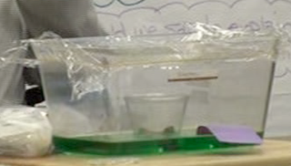

The responsive teaching and learning presented below occurred prior to the publication of the NGSS; however, students were nonetheless engaged in efforts called for by performance expectations. Here we share an example of a class exploring the water cycle and developing a model for condensation.
Click here to see the dimensions showcased in this case study and the other case study surrounding the water cycle.
Bonnie taught 5th grade in a suburban public school. Teaching responsively, her students learned about the water cycle. You will see how her students' exploration of condensation led to an inference that water can be small bits in the air too tiny to see.
Prior to this vignette, students had been pondering the water cycle within a closed aquarium. Bonnie used food coloring to make a layer of green water inside the aquarium. She put an empty cup in the aquarium, covered the aquarium with plastic, and set a bag of ice on the plastic so it was over the cup inside (see the photo).
Students noticed condensation on the ice bag, and for a while their attention was diverted to understanding why. Often they brought into the discussion a similar context that seemed familiar to everyone—condensation appearing on a water bottle:
Video 1
Examining the video. How might this discussion turn towards small particles of matter?
A few moments later, Seth and Ella add more to the conversation about water in the air:
Video 2
Examining the video. What are Seth and Ella's ideas? What is their evidence?
The next day the class resumes their discussion:
Video 3
Examining the video. Over the course of the three videos, how have the students addressed 5-PS1-a?
Delving deeper. Click here to delve deeper into the learning in these videos relative to 5-PS1-a.